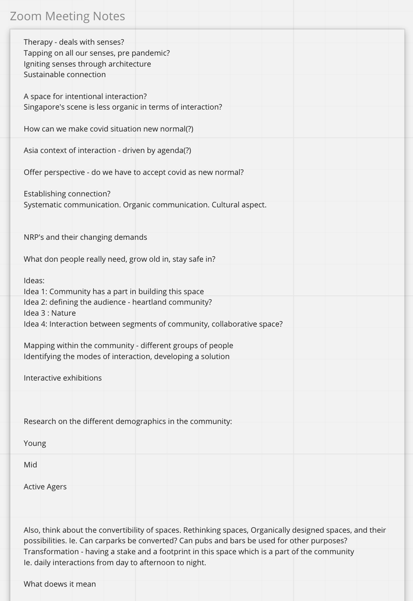
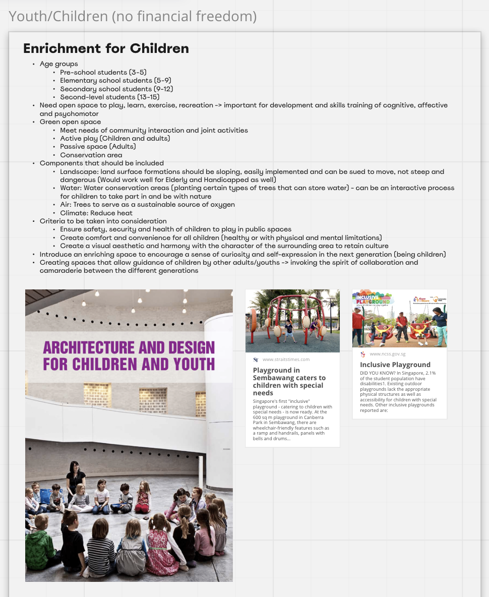
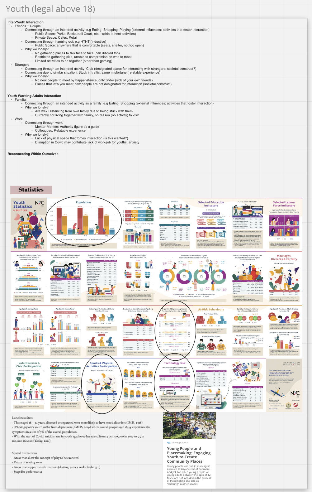
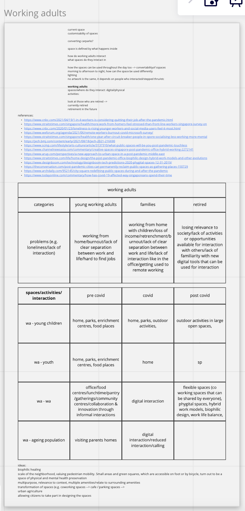
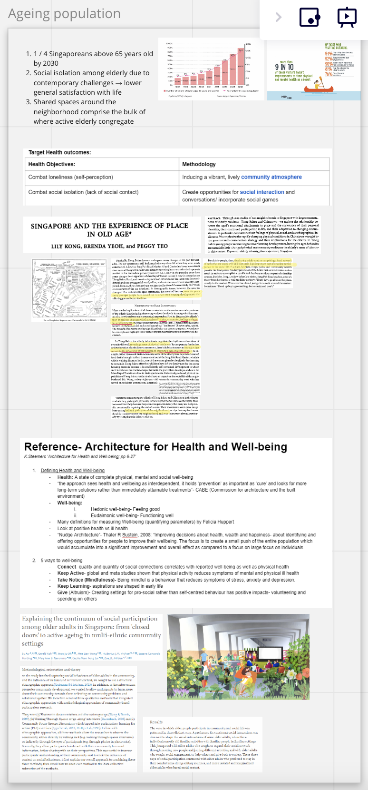
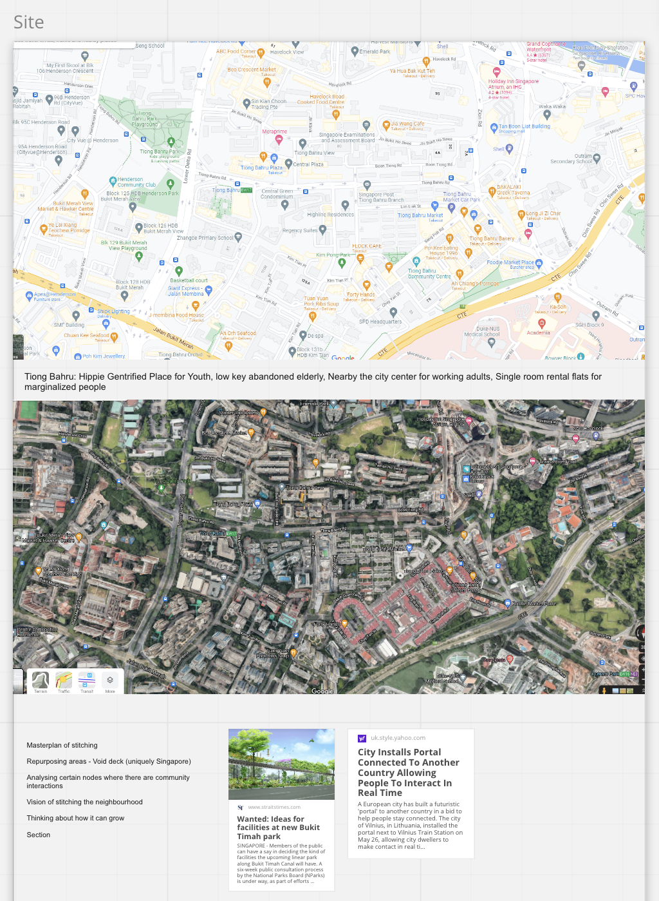
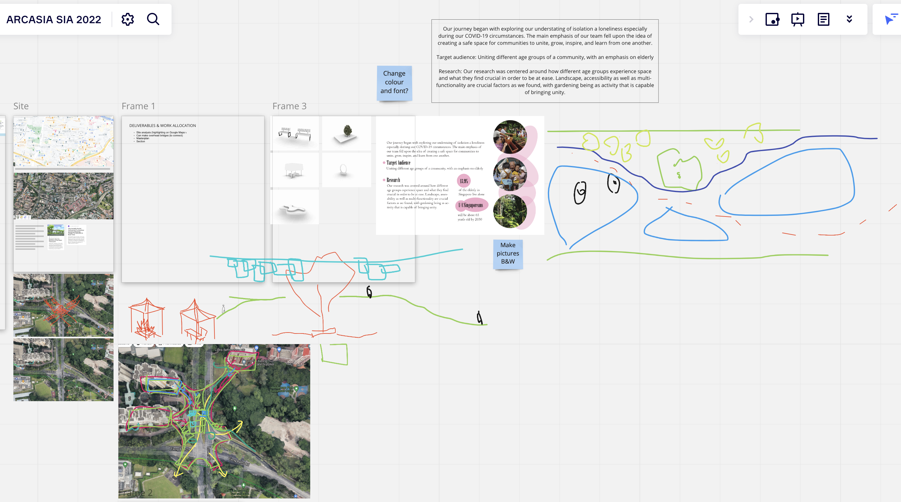
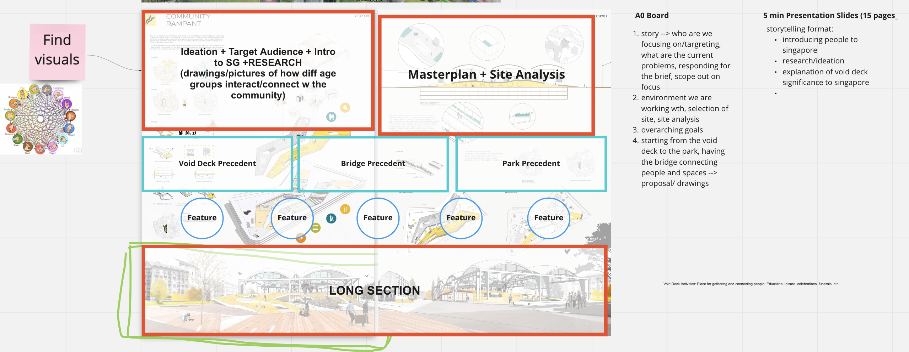

Project
ARCASIA Jamboree
Reconnecting our community through designing physical & virtual spaces 🪢
Categories
Architecture | Competitions

Organisation
Role
Singapore Student Representative, led a team of 5 with Ar. Bianca Gill's guidance
Duration
3 Days
Project Brief
The ARCASIA Student Jamboree 2021 was one of the series of activities for the 19th Asian Congress of Architects (ACA19). It attracted more than 100 students and mentors from the 15 member association of architects of ARCASIA.
2021's task statement was: The contemporary world is facing the common challenge that segregates us into atomic individuals. When people can’t meet physically, digital and virtual technology is not strong enough to recover the gap caused by the isolation. By what means could people find back the sense of belonging and identity in their community?
Based on this theme, we were tasked to brainstorm and contribute solution(s) to enhance the ties among people and vitalize the interaction in the community, which performs like a therapy, curing the loneliness and igniting hope.
Re-connect, Community?
We started by thinking and bouncing off ideas with each other regarding our take on these questions:
1) Why do we need to connect with each other?
2) How were we connected previously?
3) Why is the community important?
4) How has our community grown over time and over situations?
5) What is the sustenance required for a continuous connection in our community?
Brainstorming
After this initial brainstorming, we did some quick yet in depth research on the 4 different age-groups identified: childre, youth, working adults and the ageing population. We examined how they utilised spaces, their flow of movement throughout the day and how Covid-19 has affected them in different ways in terms of how they interact and go about their day-to-day activities. We also analysed the impact Covid-19 had on their emotional well-being, as well as from a socio-economic standpoint, how they have been affected.
Research



Choice of Site, Site Analysis
We decided to choose Tiong Bahru, one of Singapore’s oldest residential estates located in the central region, as our site. This is because it is a gentrified place where many up and coming hipster cafes have opened up in adaptively-reused shophouses to target the youth, has quite a bit of elderly living alone in secluded one-room flats and is relatively near the central business district where working adults mainly work at.
Solution, Intervention
After narrowing down our site to one particular area in Tiong Bahru, we began brainstorming about how we could connect the four plots of land separated by a huge junction. Not only did we consider the physical spatial component, we also thought about how digital experiences could be incorporated in.
After deciding on our solution, we quickly allocated tasks to the different members based on their capabilities/what they were good at and produced the deliverables needed overnight.
Presentation
Certificate